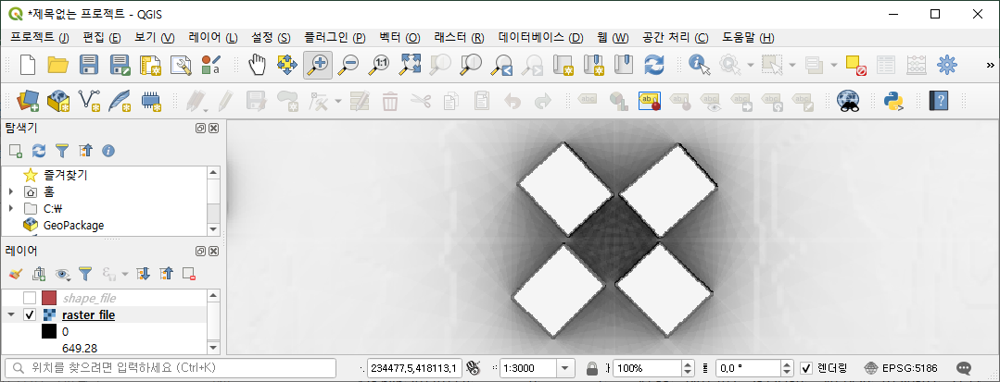
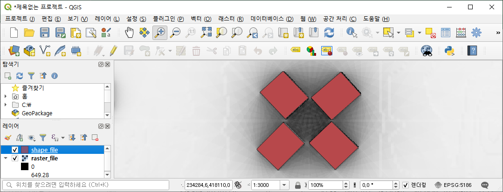
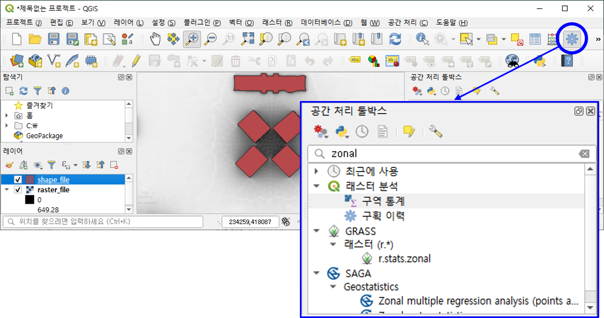
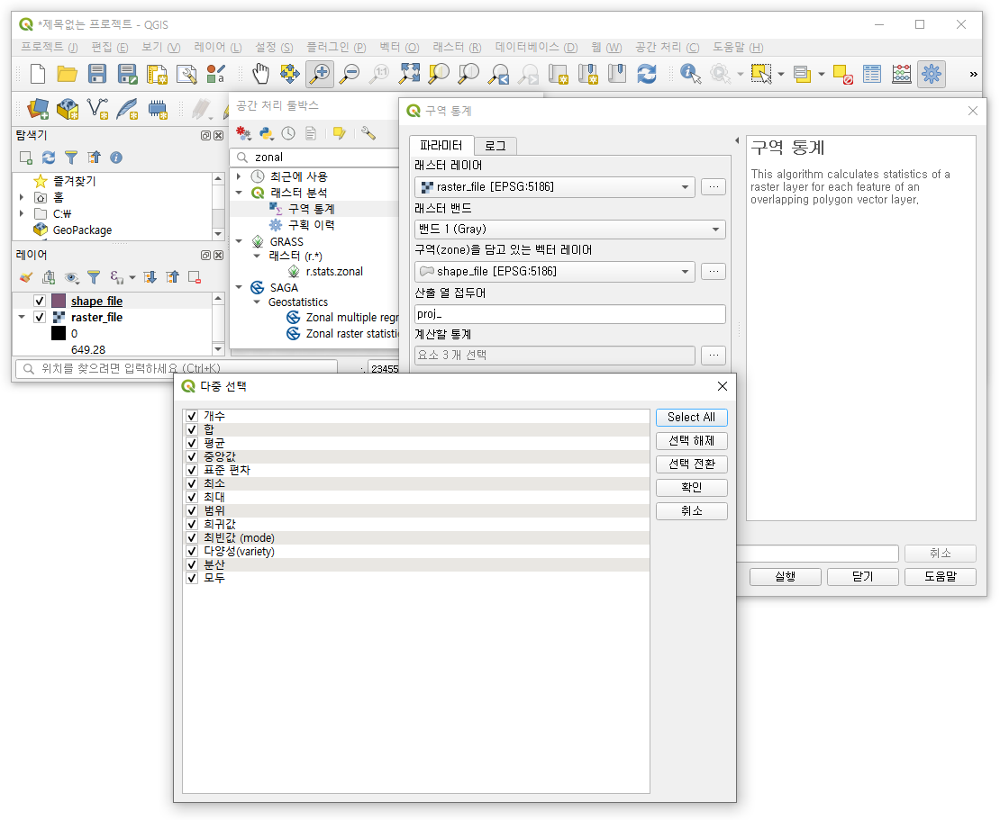
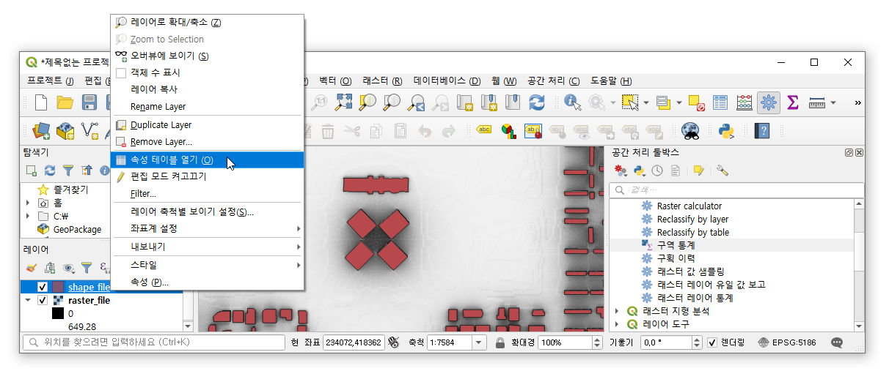
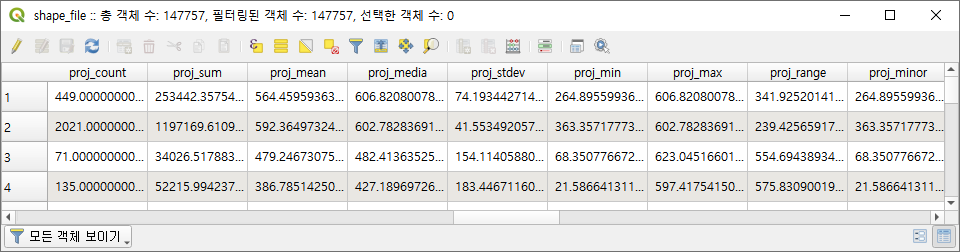
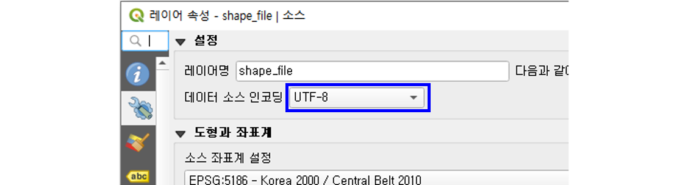
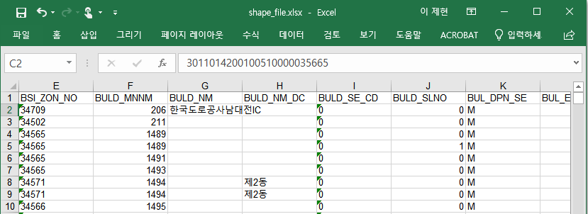

References
QGIS
wikipedia: GeoTIFF
wikipedia: Shapefile
Sampling Raster Data using Points or Polygons
- QGIS에서 geotiff 등 raster file을 shape file에 투영하는 방법을 정리합니다.
- 사용한 QGIS의 버전은
3.4.13-Madeira입니다.
1. Load Data (raster file and shapefile)
- 먼저 raster data를 불러옵니다.
Layer > Add Raster Layer...를 이용해도 되고, 탐색기에서 끌어와도 됩니다.
- 이번에는 건물 데이터를 불러옵니다.
- 마찬가지로
Layer > Add Vector Layer...를 이용해도 되고, 탐색기에서 끌어와도 됩니다.
- 참고로, 예제로 사용한 건물은 영화 레지던트 이블로도 유명해진 대전정부청사입니다.
2. Data Analysis
- raster file의 데이터를 shapefile의 feature에 투영하겠습니다.
- 우측 상단의 톱니바퀴 모양을 클릭해서 [공간 처리 툴박스]를 실행합니다.
- 검색창에 zonal statistics 또는 구역 통계을 입력하여 검색합니다.

- 래스터 레이어에 아까 불렀던 raster file, 벡터 레이어에 shapefile을 입력합니다.
- 산출 열 접두어에 결과물에 붙을 접두어를 입력 후, 계산할 통계에서 계산할 항목을 선택합니다.

- 확인을 누르면 다소의 시간이 소요된 후 다시 구역 통계 화면으로 돌아옵니다.
3. Data Verification
- 계산된 데이터는 shapefile에 새 컬럼의 형태로 포함되어 있습니다.
- 레이어의 shapefile에서 우클릭으로 속성 테이블 열기를 통해 추가된 데이터를 확인할 수 있습니다.

- 속성 테이블에 접두어로 입력한
proj_와 분석을 수행한 항목이 컬럼명으로 지정되어 있습니다.
4. Data Export
내보내기 > 객체를 다른 이름으로 저장 >에서.xlsx를 선택하면 엑셀 파일로 내보낼 수 있습니다.- 간혹 한글이 깨진 채로 나갈 때가 있는데, 인코딩 옵션을 조정하여 해결할 수 있습니다.

- 기본값(system)을 UTF-8로 바꿔주면 한글이 잘 나옵니다.
